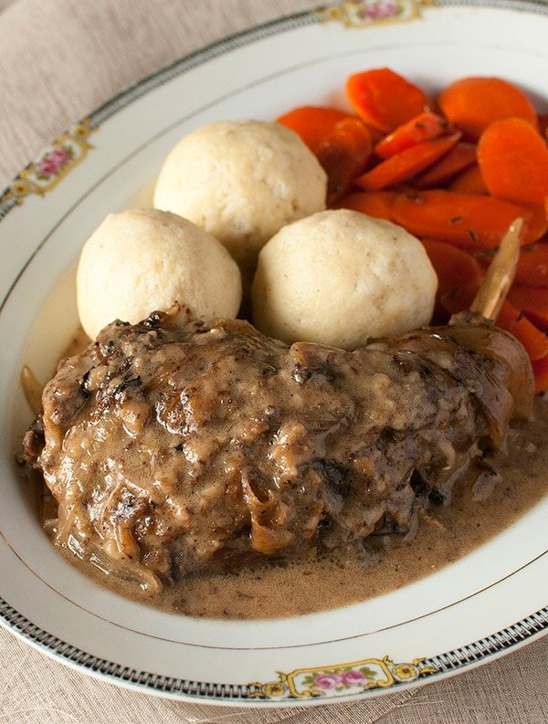

Hasenpfeffer

Description
Hasenpfeffer is an old German recipe that many immigrants brought with them to the new world. Now it is nearly forgotten in the United States, but it still enjoys popularity in Germany as well as in the hearts and stomachs of all those who grew up eating it.
This delightful meal consists of rabbit meat, very slowly cooked in a marinade of vinegar and herbs. Hasenpfeffer may not look appetizing and, admittedly, it may sound appetizing either, but once you taste it -- you'll be hooked!
Ingredients
- 3 cups red vinegar
- 3 cups water
- 1.5 tbs sugar
- 8 whole cloves
- 1 medium onion
- 5 stalks celery, chopped
- 1 tsp ground cinnamon
- 0.5 tsp ground cloves
- 1 tbs salt
- 1 tbs pickling spice
- 1 tsp black pepper
- 1 cup flour
- 1 whole rabbit
- 3 tbs vegetable oil
Steps
- In a large pot, combine the water, white sugar,
whole cloves, onion, celery, lemon, cinnamon,
ground cloves, salt, pickling spice and
black pepper. Bring to a boil, then turn off and
allow to cool. Place the rabbit pieces into the
mixture to marinate. Cover and refrigerate overnight.
- Preheat the oven to 350 degrees F (175 degrees C).
Spread flour out onto a parchment or aluminum foil
lined baking sheet. Bake for about 10 minutes,
stirring occasionally, until the flour is a light
brown color.
- Remove the rabbit from the marinade and pat dry.
Strain the marinade, and discard the solids.
Reserve the liquid for later.
- Heat the oil in a deep skillet or Dutch oven over medium heat.
Coat the chicken with the toasted flour.
Place into the hot oil, and cook until browned on both sides.
Remove from the pan, and set aside. If there is oil left in the pan,
sprinkle enough of the toasted flour over it to absorb the liquid.
- In a jar with a lid, mix 1/2 cup of the marinade with 1/4 cup of the remaining toasted flour.
Close the lid, and shake vigorously until well blended with no lumps.
Heat the pan with the rabbit drippings over low heat.
Gradually stir in the marinade mixture,
stirring constantly until slightly thickened.
- Return the rabbit pieces to the pan.
Cover and simmer over low heat for 1 hour,
or until the meat is falling off of the bones.
You may remove the bones prior to serving if desired.
And that's it! Enjoy!